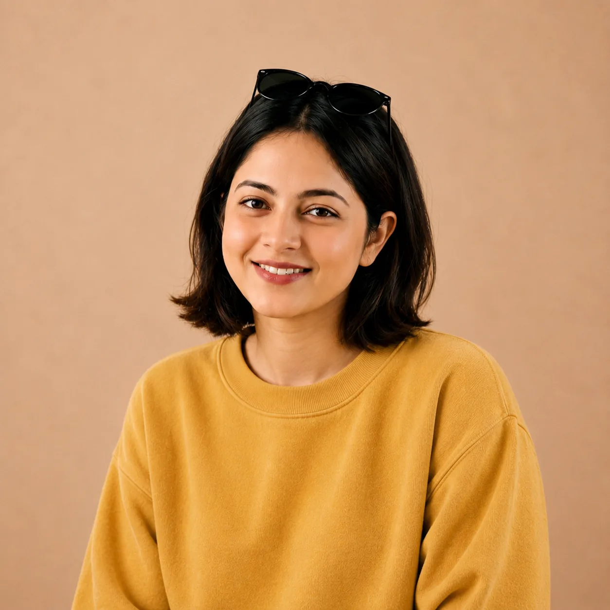
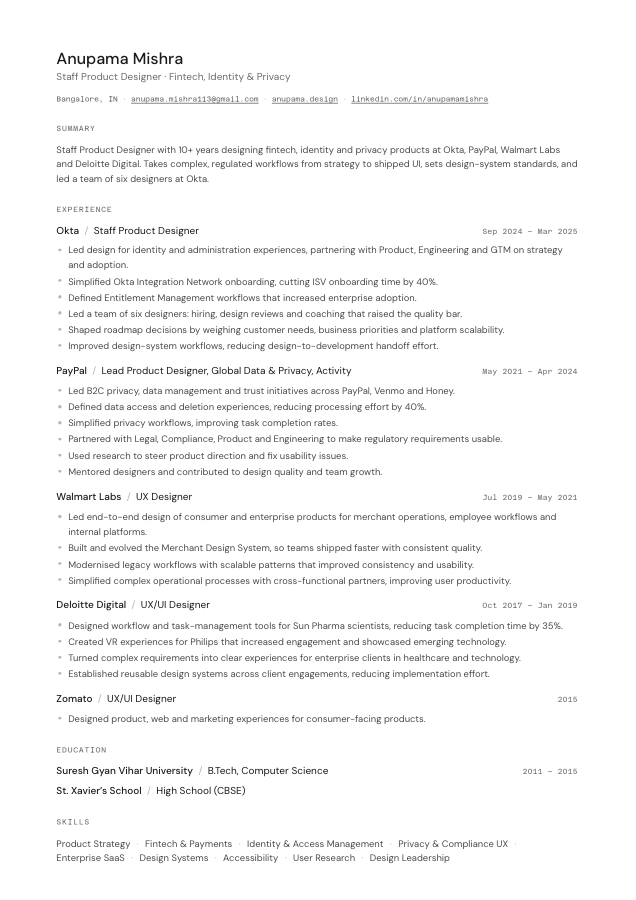
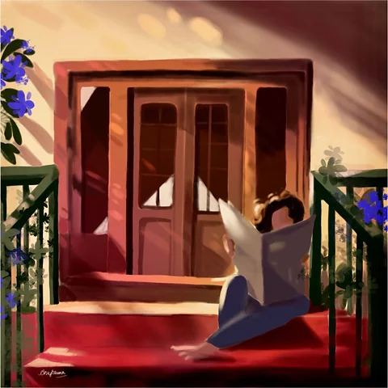
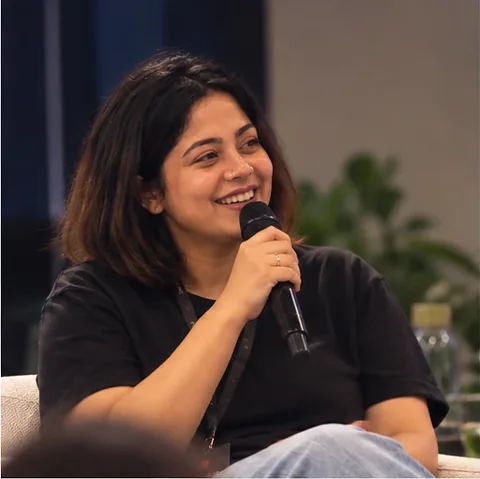

Based in Bangalore. 10+ years on fintech, identity and privacy products at Okta, PayPal and Walmart Labs. I take complex, regulated workflows from the first framing to shipped UI, and set the patterns other teams build on.
Most recently I led a team of six designers at Okta.
Badminton player, watercolour painter and Indian handloom lover.
I play badminton and paint in watercolour.
Next, I want to design with India’s handloom weavers.
Off-screen: badminton and watercolour. I’m drawn to Indian handloom, where every pattern is a system someone designed by hand.
Badminton, watercolour and handloom.
Someday: a product with the weavers who make it.
I play badminton, paint in watercolour and collect [Ikat] handloom.
Next: [a small label made with weavers in Pochampally].
The closest to the reference, minus its pastel tints (those would break "colour belongs to the work"). The status pill uses an ink dot: the green one is reserved for the hero's location line.
Staff product designer in Bangalore. 10+ years on fintech, identity and privacy products. I take complex, regulated workflows from the first framing to shipped UI.
Outside the work: I play badminton and paint in watercolour. I love Indian handloom and crafts, and want to build in handloom, working with the artisans who make it.

The resume is shown, not just linked: a recruiter sees it's real and one page before clicking. On hover the page rises into the card. Company names sit as the home cards' grey chips, not logos, so nothing competes with the work above.
Staff product designer in Bangalore. 10+ years on fintech, identity and privacy products at Okta, PayPal and Walmart Labs. I take complex, regulated workflows from the first framing to shipped UI.
Outside the work: I play badminton and paint in watercolour. I love Indian handloom and crafts, and want to build in handloom, working with the artisans who make it.


Warmest of the four, but it overlaps the Beyond work ring right under it (same photos, same job). If you pick this, I'd suggest it replaces the ring rather than sitting above it. "Replies within a day" is a stand-in, yours to confirm or cut. There are no badminton or handloom photos on the site yet; one of either would fit a tile here better than the talk photo.
10+ years on fintech, identity and privacy products at Okta, PayPal and Walmart Labs. I take complex, regulated workflows from the first framing to shipped UI, and set the patterns other teams build on.
Outside the work: I play badminton and paint in watercolour. I love Indian handloom and crafts, and want to build in handloom, working with the artisans who make it.
Least bento, most restrained: one soft card, the same weight as Now or Small talk. Fastest to scan, least "portfolio template".